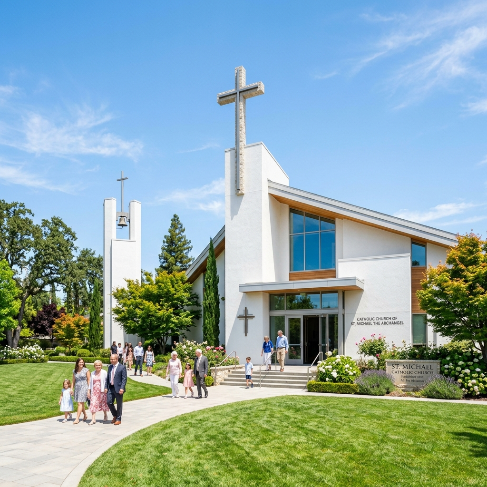
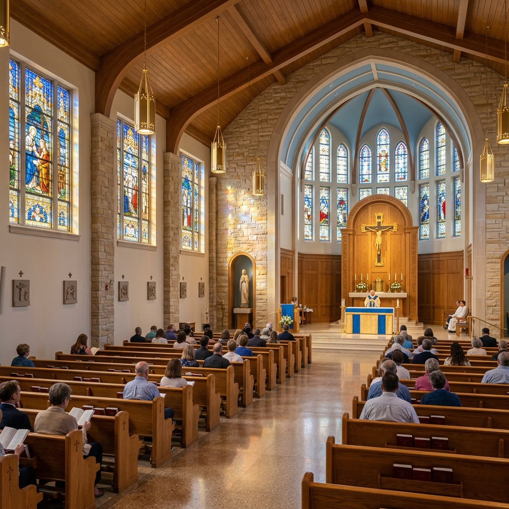
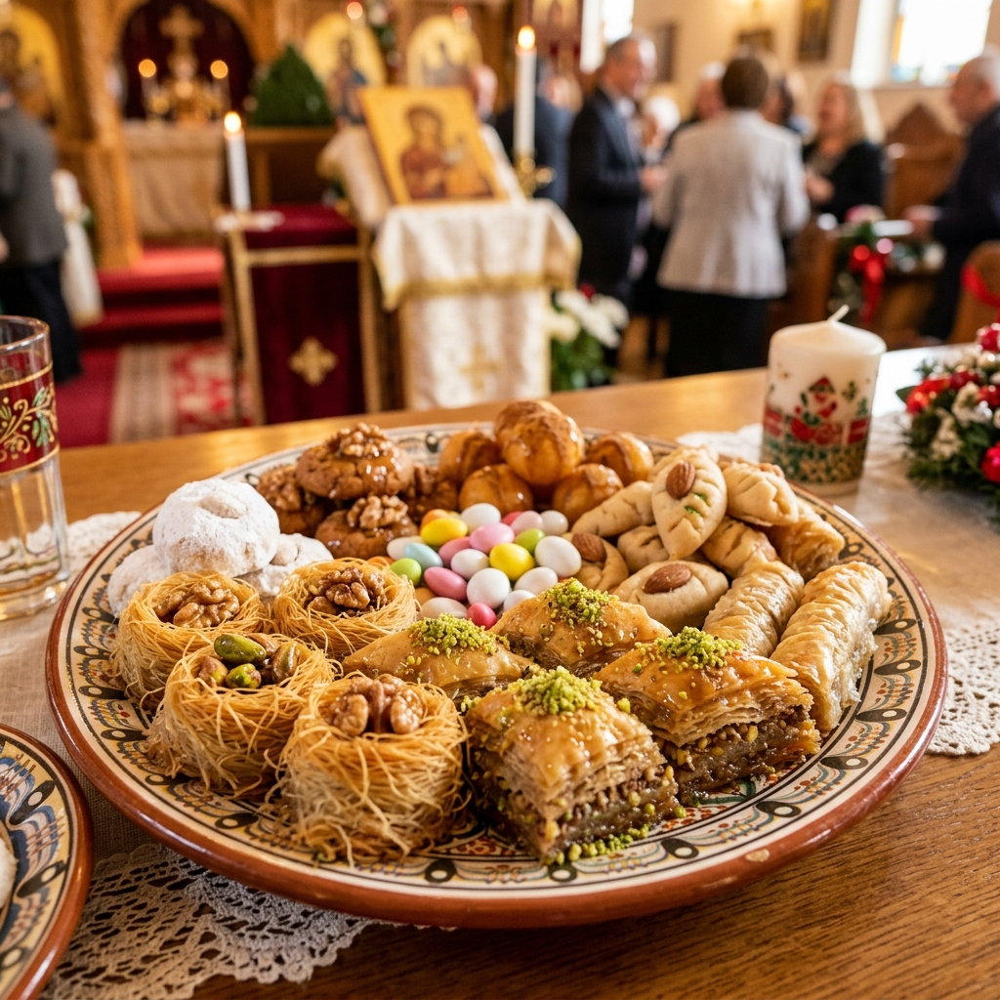
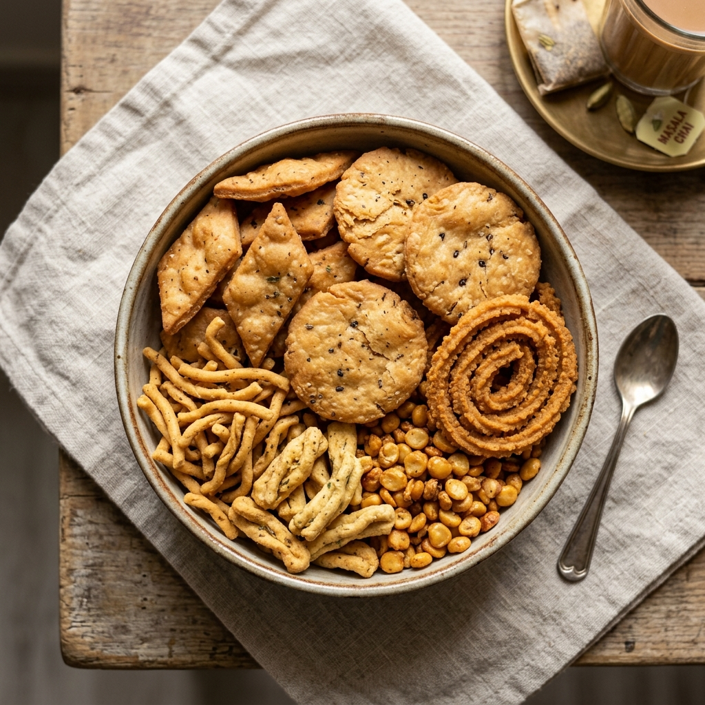
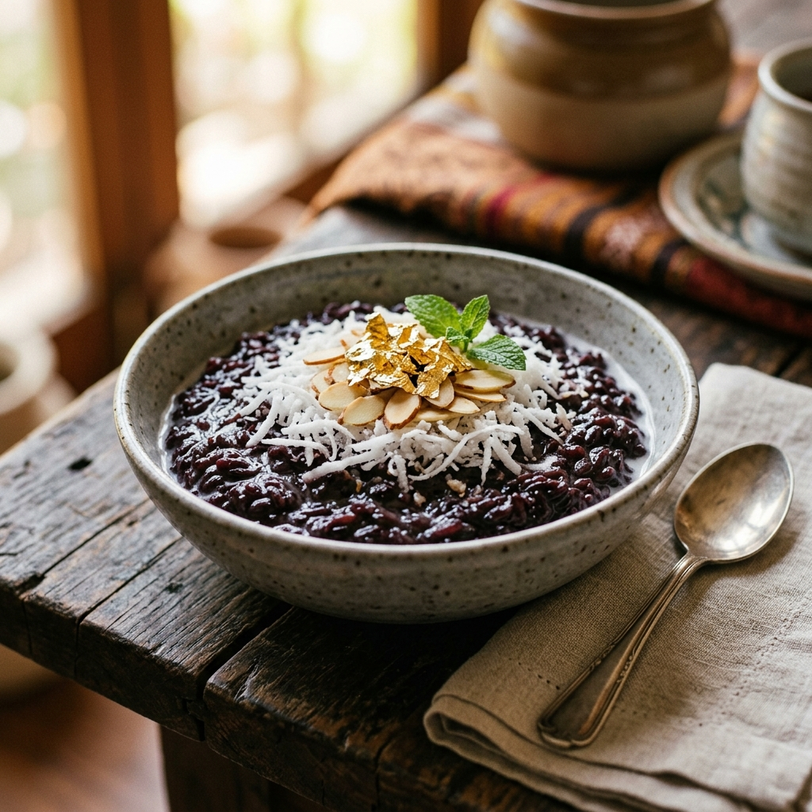
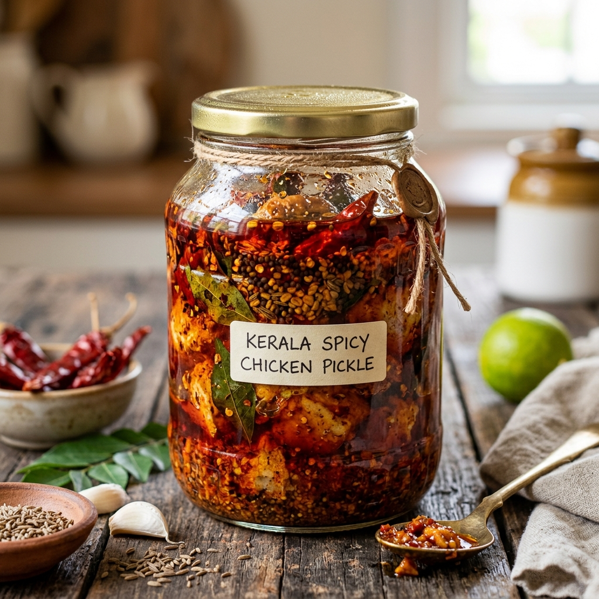

"Homemade Good Food for a Great Cause"
This fundraiser is organized by the Catholic Youth Fellowship (CYF). All proceeds go directly to supporting youth leadership workshops, spiritual retreats, and parish community camps.
Bringing families together to celebrate fathers, grandfathers, and father-figures, while fostering deep communal ties within the Don Bosco parish community.
Every single delicacy is prepared in home kitchens by parishioners, using fresh ingredients, traditional family recipes, and strict hygiene standards.





Highly RecommendedA premium, aromatic traditional Manipuri black rice dessert. Slow-cooked with fresh milk, sweetened delicately, and garnished with premium dry fruits, coconuts, and blessings.

Parish FavoriteSucculent chicken pieces cooked to perfection, preserved in rich aromatic spices, cold-pressed oils, and fresh curry leaves. Zero artificial preservatives. A true burst of homemade flavors.
A festive curation of traditional sweet treats and baked goods made from local ingredients. Perfect for sharing with the family during your Father's Day lunchtime celebration.
Crispy, crunchy, and savory traditional snacks, prepared with absolute hygienic care. The perfect accompaniment for your evening tea or gathering with your father.
Weekly special dishes prepared dynamically by our CYF culinary team. Inquire on WhatsApp to find out the special Father's Day roast menu items available for order.
"Honor your father and your mother, that your days may be long in the land that the Lord your God is giving you."Exodus 20:12
Wishing a peaceful, blessed, and joyful Father's Day to all fathers, mentors, and guardians in our community.
Directly funds youth ministry activities, leadership training, and youth events that nurture spiritual growth and community service.
Helps support parish outreach programs for families in need, children's catechism camps, and charitable assistance projects.
Treat your father with authentic, delicious, handmade food while showing deep appreciation for all their love and sacrifice.
Relish authentic, highly hygienic, and delicious recipes crafted by parish mothers and youth with traditional culinary passion.
Friendly Reminder: The first 10 pre-orders receive a special surprise token of appreciation! Secure yours early.